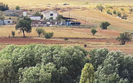

A unos 6 km al SO del núcleo principal de la ciudad, se encuentra Carrascal, el barrio zamorano de carácter más marcadamente rural. En su entorno se extiende un variada campiña, con mosaico de campos de cereal, pastizales, encinares, setos, arbolado de ribera, humedales y cortados fluviales. Se trata de un área interesante para la observación de una gran diversidad aves propias de los agrosistemas, rupícolas y acuáticas. Muy próximo se halla el Centro de Tratamiento de Residuos de la Diputación de Zamora, que acoge a lo largo del año centenares de cigüeñas blancas, garcillas bueyeras, milanos reales y negros y gaviotas, entre otras especies.
